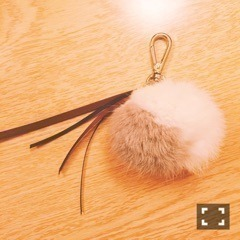

| 2016/09 17 Sat | 斎藤ちはる 名古屋充(´>∀<｀)ゝ |
ちはるーむへようこそ！
ちらっ
-------------------------♡
今日は名古屋にてセブン-イレブン限定ミニライブイベント！
わざわざ来てくださった皆さん
ありがとうございました(﹡ˆ ˆ﹡)
モニターもなくて
遠くの方は見えにくかったよね。、
ごめんなさい(> <)
その分私はパフォーマンスを
いつもよりも大きく踊ってみたつもり
だったのですが、
少しは伝わりましたか(｡･o･｡)ﾉ？？
1人でも伝わってたらいいな(﹡ˆ ˆ﹡)
今日の髪型は両耳かけの
ストレートでした！！
踊ったときに髪の毛が
よく動いて綺麗に見えるのが
ストレートヘア♪
夜にはご飯を食べる会がありまして
私も参加しました(﹡ˆ ˆ﹡)
参加メンバーは、
ずー、愛未、かりん、琴子と
人数は少なかったけど
ゆっくり全員と話ができて
普段聞けないような話も聞けて
凄い楽しかったよ♡
お好み焼きを食べました！！
名古屋なのに！！
何故！！
という感じでしたが
とっても美味しかった。
みんなと写真撮ればよかったな(> <)
そしてそして
明日の全握も楽しみにしてます〜( ◦˙ ˙◦ )
まいちゅんとペアです！
まいちゅん初！
長身コンビ！
話題よかったら(｡･o･｡)ﾉ
・セブンイレブンでよく買うものといえば？
・オススメの曲は？
・好きな色は？
・ぶどう派？マスカット派？
・ごま油派？オリーブオイル派？
・黒髪派？茶髪派？
などなど
皆さん是非教えてください！！
-------------------------♡
#ChihaOOTD
今日はファッションというか、
小物になります！
ファーストラップ(﹡ˆ ˆ﹡)

一見普通のストラップに見えますが
実はこれ、お母さんが作ってくれたんです！
作ったといっても
ファー等、パーツを買って
リボンを金具で留めて
それを付けた簡単なものですが
私にとってはとても嬉しい\( ˆoˆ )/
いまとってもファーが流行っていて
お店でもよく見かけるのですか
流行りすぎてみんなと被りそう(> <)
と思っていたので
自分でファーの色を選び
リボンの色を選び
自分だけのストラップになったのが
凄い嬉しいんだ〜(﹡ˆ ˆ﹡)
最近お母さんは
アクセサリー作りにハマっていて
イヤリングやピアス、
ブレスレットや指輪まで
作り始めています。笑
それが中々センスが良い！！笑
お母さんのハンドメイドアクセサリー
また紹介します(﹡ˆ ˆ﹡)
-------------------------♡
♬ ChihaMusic
「憂、燦々」クリープハイプさん
歌詞がとっても可愛い。
あまのじゃくな感じや
少し強気な女の子の感じが
可愛い。
声にも惹かれる！
綺麗な高い声が人とは違って
魅了されます。
GUAM♡
写真見てるとやっぱり
海外行きたいな〜ってなる。
私が行きたいのは
ヨーロッパと
エジプトと
モルディブと
アメリカ。
バラバラすぎる！！
しかもアバウト！！
おやすみ〜
斎藤ちはる